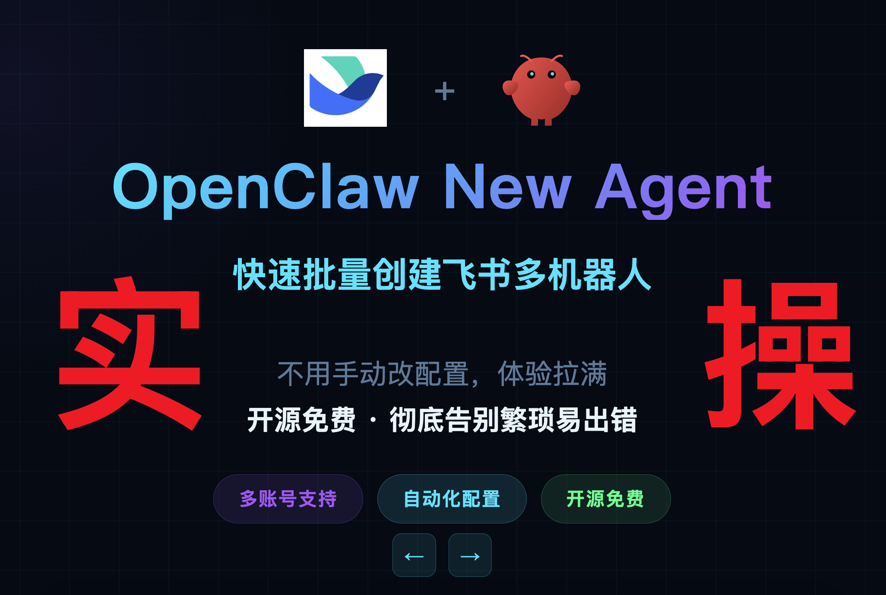

008-🚀OpenClaw多Agent实战保姆级教程

2026年3月30日OpenClaw 飞书机器人迎来重磅升级，支持多账号模式、新增 Agent 功能，带来更强大的自动化工作流体验。
2026年3月26日微信官方推出 ClawBot 插件，iOS 8.0.70+ 三步接入 OpenClaw，告别封号风险与复杂配置，原生通道即时响应，AI 助手正式进驻 13 亿用户口袋。
2026年3月22日Superpowers 是一个 Claude Code 技能框架，提供架构设计、性能优化、Bug 排查等专业技能，帮助开发者高效完成复杂任务。
2026年3月21日小米自研万亿参数大模型系列发布，包括 MiMo-V2-Pro、MiMo-V2-Omni 和 MiMo-V2-TTS 三款模型，专为 Agent 时代打造。
2026年3月19日从零开始配置 Nuxt 3 项目，实现高效的服务器端渲染和静态站点生成。
2026年3月15日深入分析 Go 语言的 goroutine、channel 和 select 语句，掌握高并发编程技巧。
2026年3月12日分析缓存穿透、击穿和雪崩问题的原因，提供完整的解决方案和代码示例。
2026年3月10日使用多阶段构建技术，将 Docker 镜像大小减少 80%，提升部署效率。
2026年3月8日从基础到高级，全面讲解 Vue 3 自定义指令的创建、使用和最佳实践。
2026年3月5日学习如何将 GPT-4 集成到现有应用中，构建智能对话和内容生成系统。
2026年3月3日掌握 Nuxt 3 中间件系统，实现页面访问控制、权限管理和数据预取。
2026年3月1日使用 Go 语言构建微服务架构，包括服务发现、负载均衡和链路追踪。
2026年2月28日详细讲解 Redis 集群的搭建、配置和故障转移机制，确保高可用性。
2026年2月25日使用 Docker Compose 管理复杂的多容器应用，实现开发、测试和生产环境的一致性。
2026年2月22日从 Vuex 迁移到 Pinia，掌握新一代状态管理库的核心概念和最佳实践。
2026年2月20日构建基于 LangChain 和向量数据库的 RAG 系统，实现智能文档检索和问答。
2026年2月18日全面优化 Nuxt 3 应用性能，包括代码分割、懒加载和性能监控策略。
2026年2月15日探索 Go 1.18 引入的泛型特性，学习如何编写类型安全的通用代码。
2026年2月12日深入分析 Redis 内存使用，提供数据压缩和内存优化的实用技巧。
2026年2月10日